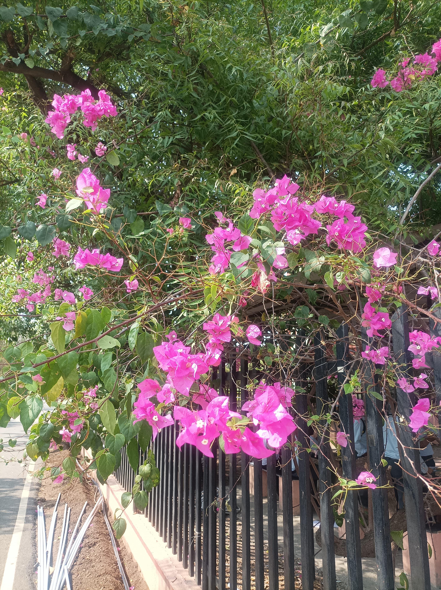

About Bougainvillea
Bougainvillea is a genus of thorny ornamental vines, bushes, or trees. The plant is native to South America, particularly Brazil, but it is now grown in many regions with warm climates. Bougainvillea is known for its vibrant, colorful bracts, which are specialized leaves that surround its small, inconspicuous flowers.
Features of Bougainvillea
- Bougainvillea plants have thorny stems.
- They are drought-tolerant once established.
- Bougainvillea blooms in a variety of colors, including pink, red, purple, orange, and white.
- They are popular for use in landscaping, gardens, and as potted plants.
Care and Maintenance
To care for Bougainvillea:
- Plant it in well-drained soil in a sunny location.
- Water regularly, but allow the soil to dry out between waterings.
- Prune to shape and control size, typically after flowering.
- Protect from frost in cooler climates.
Fun Fact
The colorful bracts of Bougainvillea are often mistaken for flowers, but the true flowers are small and white, surrounded by the bracts.